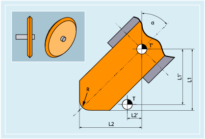

The following tool types are available in the "Grinding tools" group:
400 | Surface grinding wheel |
401 | Surface grinding wheel with monitoring |
402 | Surface grinding wheel without monitoring without base dimension (TOOLMAN) |
403 | Surface grinding wheel with monitoring without base dimension for grinding wheel peripheral speed GWPS |
410 | Facing wheel |
411 | Facing wheel (TOOLMAN) with monitoring |
412 | Facing wheel (TOOLMAN) without monitoring |
413 | Facing wheel with monitoring without base dimension for grinding wheel peripheral speed GWPS |
490 | Dresser |
The following diagram provides an overview of which grinding tool parameters are entered in the compensation memory:
T | Tool carrier reference point |
T' | Tool holder reference point |
L1 | Geometry - length 1 |
L1' | Base dimension - length 1 |
L2 | Geometry - length 2 |
L2' | Base dimension - length 2 |
R | Radius |
α | Angle of inclined wheel |
Cutting edge-specific parameters | Meaning |
|---|---|
$TC_DP1 | Tool type 4xy |
$TC_DP2 | Cutting edge position |
$TC_DP3 | Geometry length 1 |
$TC_DP4 | Geometry length 2 |
$TC_DP6 | Radius |
$TC_DP21 | Base dimension length 1 |
$TC_DP22 | Base dimension length 2 |
| |
Tool-specific parameters | Meaning |
|---|---|
$TC_TPG1 | Spindle number |
$TC_TPG2 | Chaining rule 1) |
$TC_TPG3 | Minimum wheel radius |
$TC_TPG4 | Minimum wheel width |
$TC_TPG5 | Actual wheel width |
$TC_TPG6 | Maximum speed |
$TC_TPG7 | Maximum circumferential velocity |
$TC_TPG8 | Angle of inclined wheel |
$TC_TPG9 | Parameter number for radius calculation |
$TC_TPG_DRSPATH | Directory path to the dressing program |
$TC_TPG_DRSPROG | Dressing program name |
See also:
Overview